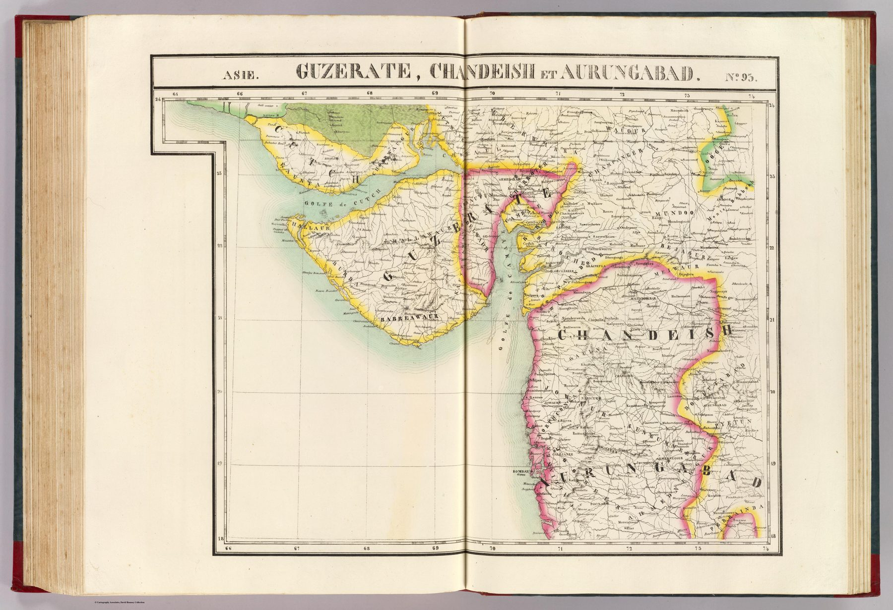

← Home Ground Bombay and Deccan

A neighbouring tile
Asia no. 93 belongs to the same uniform-scale Atlas Universel as the Bijapur sheet. Lithographed by Henri Ode, it covers Gujarat, Khandesh and the Aurangabad country at 1:1,641,836, with relief represented pictorially and longitude measured from Paris.
Irregular shape, regular system
The plate’s unusual outline is generated by the projection and the requirement that it meet adjoining sheets. The region is clipped and angled so that the atlas can maintain a single globe-wide geometry.
The gaze
The adjoining Bijapur sheet shows what the uniform scale offers; this one shows what it costs at the edges. Gujarat, Khandesh and Aurangabad share the plate only because the grid happened to fall across them, and the oblique outline leaves the reader to supply any sense of the region from elsewhere. Longitude reckoned from Paris is a further reminder of where the system’s centre lies.
In the Deccan timeline
Tughluq moves the capital to Daulatabad (1327 · Prologue) · Ahmadnagar (1490–1565) · Chand Bibi and the siege of Ahmadnagar (1595–1600) · Malik Ambar (c. 1548–1626) · The Deccan famine of 1630–32 (1630–1632) · Nizam-ul-Mulk establishes the Asaf Jahi state (11 October 1724) · Palkhed, 1728 (28 February 1728) · Mahadji Scindia and Kharda (1794–1795) · Assaye, 1803 (23 September 1803) · The Deccan Commission (1818–1826) · The Berar assignment (21 May 1853)